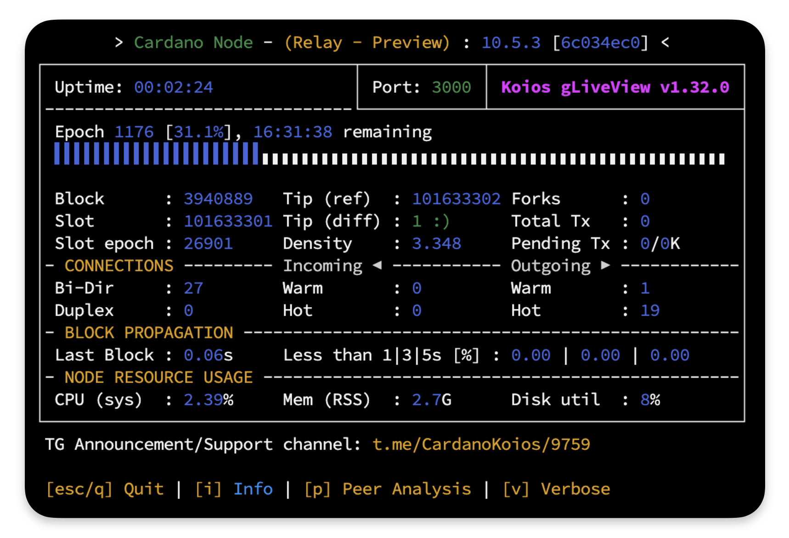

Cardanoインデクサーサーバー構築¶
本ドキュメントは、Cardanoインデクサーサーバー（cardano-node 、 cardano-db-sync 、 PostgreSQL） を構築するための手順です。
事前準備¶
ローカル環境での事前準備
SSH接続でログインする場合は、事前にローカル環境でSSH認証キーを作成してください。
1. 管理者モードでターミナルを起動します。
Win + X を押下し、ターミナル（管理者）を選択し、SSHクライアントの有無を確認します。
Get-WindowsCapability -Online | Where-Object Name -like 'OpenSSH.Client*'
State : Installedであれば問題ありません。
State : NotPresentの場合
以下のコマンドで追加してください。
Add-WindowsCapability -Online -Name OpenSSH.Client~~~~0.0.1.0
2. SSH鍵生成
mkdir ~/.ssh -Force
ssh-keygen -t ed25519 -N "" -C "ssh_connect" -f ~/.ssh/ssh_ed25519
3. 公開鍵ファイル名の変更
cd ~/.ssh
mv ssh_ed25519.pub authorized_keys
1. ターミナルを起動します。
⌘ + Space（Command + Space）を押下し、「terminal」と入力し、Enterを押下します。
2. SSH鍵生成
mkdir -p ~/.ssh
ssh-keygen -t ed25519 -N "" -C "ssh_connect" -f ~/.ssh/ssh_ed25519
3. 公開鍵ファイル名の変更
cd ~/.ssh
mv ssh_ed25519.pub authorized_keys
注意
以下の鍵は絶対に紛失しないでください。
紛失するとサーバーへ接続できなくなります。
ssh_ed25519 （秘密鍵）
authorized_keys （公開鍵）
サーバーでの事前準備
日常運用ではrootアカウントを使用せず、sudo権限を付与した一般ユーザーで操作します。
新しいユーザーを作成します。
任意のアルファベット文字を入力してください。
この例ではcardanoユーザーとして以降進めます。
adduser cardano
New password: # パスワードを設定
Retype new password: # 確認のため再入力
Enter the new value, or press ENTER for the default
Full Name []: # フルネーム等の情報を設定（不要であればブランクでも問題ありません）
Room Number []:
Work Phone []:
Home Phone []:
Other []:
Is the information correct? [Y/n] : y
cardanoにsudo権限を付与します。
usermod -aG sudo cardano
rootからログアウトします。
exit
ヒント
ターミナルソフトの接続ユーザーを、上記で作成したユーザー名（cardano）およびパスワードに変更して再接続してください。
1. SPOKIT導入設定¶
当ツールはUbuntuセキュリティ設定からcardano-nodeインストールなど、ノーコマンドで Cardano ステークプールの構築・管理を行える Cardano SPO Tool Kit です
1-1. 初期設定¶
パスワード入力について
管理者権限パスワードを求められた場合は、ユーザー作成時に設定したパスワードを入力してください。
-
SPOKITを導入して初期設定からノードインストールまで行います。wget -qO- https://spokit.spojapanguild.net/install.sh | bashキーボードの
↑と↓、←と→でカーソルを移動できます。 -
セットアップノードタイプでは「
リレー」を選択して Enter
-
接続ネットワークでは「
Preview-Testnet」を選択して Enter
-
作業ディレクトリPATHは、デフォルトを指定するのでそのまま Enter
-
「
はい」を選択し、 Enter -
「
source」コマンドを必ず実行してください。

1-2. Ubuntuセキュリティ設定¶
Ubuntuセキュリティ設定モードについて
このモードでは、Cardanoノード実行に推奨されるUbuntuセキュリティ設定が含まれています。
- 以下のコマンドを実行します。
実行コマンド
spokit ubuntu「
Enter...」と表示されたら Enter キーを押下し、以降はスクリプトの指示に従って設定してください。
デフォルトは「はい」を選択します。
1-3. ノードインストール¶
-
プール構築するため以下のコマンドを実行します。
実行コマンドspokit pool -
「
ノードインストール」を選択して Enter
-
以降はノードのポート番号設定まで進め、添付画像のように、最終行に 「
> 戻る」 が表示される状態になるまで待機します。

-
「
> 戻る」が表示されたら Enter を押下後、「[q] 終了」を選択し、SPOKITウィザードを閉じます。 -
以下のコマンドを実行し、Cardano ノードの起動状態を確認します。
glivegLive が表示されていれば、ノードは正常に起動しています。
preview.cardanoscanなどのエクスプローラーでエポックやスロットを確認することもできます。
ヒント
gliveを閉じたらブラケットモード無効化を反映させるために一度ターミナルを閉じて、その後再接続してください。
exit
2. PostgreSQLの設定¶
2-1. PostgreSQLインストール¶
PostgreSQL 17 を使用します。
順に実行してください。
sudo apt update
sudo apt install -y curl ca-certificates
sudo install -d /usr/share/postgresql-common/pgdg
sudo curl -s -o /usr/share/postgresql-common/pgdg/apt.postgresql.org.asc --fail https://www.postgresql.org/media/keys/ACCC4CF8.asc
sudo sh -c 'echo "deb [signed-by=/usr/share/postgresql-common/pgdg/apt.postgresql.org.asc] \
https://apt.postgresql.org/pub/repos/apt $(lsb_release -cs)-pgdg main" \
> /etc/apt/sources.list.d/pgdg.list'
sudo apt update
sudo apt -y install postgresql-17 postgresql-server-dev-17 postgresql-contrib libghc-hdbc-postgresql-dev
依存関係インストール
sudo apt install git jq bc automake tmux nano rsync htop curl build-essential pkg-config libffi-dev libgmp-dev libssl-dev libtinfo-dev libsystemd-dev zlib1g-dev make g++ wget libncursesw5 libtool autoconf liblmdb-dev openssl prometheus-node-exporter -y
2-2. PostgreSQL 初期設定¶
接続用.pgpass.restoreと.pgpassの作成
DBSYNC_USER="$(whoami)"
DBSYNC_PASS="$(uuidgen | tr -d '-' | head -c 16)"
cat <<EOF > "$HOME/.pgpass.restore"
/var/run/postgresql:5432:cexplorer:*:*
EOF
chmod 600 "$HOME/.pgpass.restore"
DBSYNC_HOST="$(curl -s https://api.ipify.org)"
cat <<EOF > "$HOME/.pgpass"
${DBSYNC_HOST}:5432:cexplorer:${DBSYNC_USER}:${DBSYNC_PASS}
EOF
chmod 600 "$HOME/.pgpass"
.pgpassと.pgpass.restoreファイルについて
postgreSQLに接続するためのユーザーIDとランダムパスワードが記載されたファイルのため、バックアップを推奨します。
PostgreSQL用のアカウントを作成
sudo -u postgres psql -c "CREATE ROLE \"${DBSYNC_USER}\" LOGIN SUPERUSER PASSWORD '${DBSYNC_PASS}';"
CREATE ROLE
db-sync用テーブル作成
sudo -u postgres psql -d postgres -c "CREATE DATABASE cexplorer;"
CREATE DATABASE
SSL作成
SSL/TLS 通信について
PostgreSQL を外部サーバーで利用する場合、SSL/TLS 通信が必須です。
サーバー証明書作成
cd $HOME
openssl req -new -x509 -days 3650 -nodes -keyout server.key -out server.crt -subj "/CN=postgresql"
権限・パス再配置
sudo mkdir -p /etc/postgresql/ssl
sudo mv server.key server.crt /etc/postgresql/ssl/
sudo chown postgres:postgres /etc/postgresql/ssl/server.key /etc/postgresql/ssl/server.crt
sudo chmod 600 /etc/postgresql/ssl/server.key
sudo chmod 644 /etc/postgresql/ssl/server.crt
postgresqlパフォーマンス設定
設定概要
- cardano-db-sync / Midnight-node 専用チューニング
sudo sed -i /etc/postgresql/17/main/postgresql.conf \
-e "s|ssl_cert_file = '.*'|ssl_cert_file = '/etc/postgresql/ssl/server.crt'|" \
-e "s|ssl_key_file = '.*'|ssl_key_file = '/etc/postgresql/ssl/server.key'|" \
-e "s/^#\?listen_addresses *= *.*/listen_addresses = '*'/" \
-e "s|^#\?[[:space:]]*synchronous_commit[[:space:]]*=.*|synchronous_commit = off|" \
-e 's!shared_buffers = 128MB!shared_buffers = 2GB!' \
-e 's!#effective_cache_size = 4GB!effective_cache_size = 8GB!' \
-e 's!#work_mem = 4MB!work_mem = 16MB!' \
-e 's!#maintenance_work_mem = 64MB!maintenance_work_mem = 512MB!' \
-e 's!max_wal_size = 1GB!max_wal_size = 4GB!' \
-e 's!min_wal_size = 80MB!min_wal_size = 1GB!'
postgresql再起動
sudo systemctl restart postgresql
設定値確認
sudo -u postgres psql -tAc "SHOW config_file; SHOW listen_addresses; SHOW synchronous_commit; SHOW shared_buffers;"
/etc/postgresql/17/main/postgresql.conf
*
off
2GB
3. cardano-db-syncの設定¶
3-1. 依存関係インストール¶
TMUXセッションを展開
tmux new -s build
libsodiumインストール¶
リビジョンの取得
REV=$(curl -sL https://github.com/input-output-hk/iohk-nix/releases/latest/download/INFO \
| awk '$1 == "debian.libsodium-vrf.deb" { rev = gensub(/.*-(.*)\.deb/, "\\1", "g", $2); print rev }')
echo $REV
ダウンロード
cd $HOME/git
git clone https://github.com/IntersectMBO/libsodium
cd libsodium
git checkout $REV
ビルド
./autogen.sh
sleep 1
./configure
make
make check
sudo make install
Secp256k1インストール¶
リビジョンの取得
REV=$(curl -L https://github.com/input-output-hk/iohk-nix/releases/latest/download/INFO \
| awk '$1 == "debian.libsecp256k1.deb" { rev = gensub(/.*-(.*)\.deb/, "\\1", "g", $2); print rev }')
echo $REV
ダウンロード
cd $HOME/git
git clone https://github.com/bitcoin-core/secp256k1
cd secp256k1
git checkout $REV
ビルド
./autogen.sh
sleep 1
./configure --enable-module-schnorrsig --enable-experimental
make
make check
sudo make install
動的リンカ設定
echo "/usr/local/lib" | sudo tee /etc/ld.so.conf.d/local-lib.conf
sudo ldconfig
ldconfig -p | grep libsecp256k1
libsecp256k1.so.2 (libc6,x86-64) => /usr/local/lib/libsecp256k1.so.2
libsecp256k1.so (libc6,x86-64) => /usr/local/lib/libsecp256k1.so
blstインストール¶
リビジョンの取得
REV=$(curl -L https://github.com/input-output-hk/iohk-nix/releases/latest/download/INFO \
| awk '$1 == "debian.libblst.deb" { rev = gensub(/.*-(.*)\.deb/, "\\1", "g", $2); print rev }')
echo $REV
ダウンロード
cd $HOME/git
git clone https://github.com/supranational/blst
cd blst
git checkout v$REV
ビルド
./build.sh
インストール
cat > libblst.pc << EOF
prefix=/usr/local
exec_prefix=\${prefix}
libdir=\${exec_prefix}/lib
includedir=\${prefix}/include
Name: libblst
Description: Multilingual BLS12-381 signature library
URL: https://github.com/supranational/blst
Version: 0.3.10
Cflags: -I\${includedir}
Libs: -L\${libdir} -lblst
EOF
sudo cp libblst.pc /usr/local/lib/pkgconfig/
sudo cp bindings/blst_aux.h bindings/blst.h bindings/blst.hpp /usr/local/include/
sudo cp libblst.a /usr/local/lib
sudo chmod u=rw,go=r /usr/local/{lib/{libblst.a,pkgconfig/libblst.pc},include/{blst.{h,hpp},blst_aux.h}}
GHCUPインストール¶
インストール変数設定
cd $HOME
export BOOTSTRAP_HASKELL_GHC_VERSION=9.6.7
export BOOTSTRAP_HASKELL_CABAL_VERSION=3.12.1.0
export BOOTSTRAP_HASKELL_NO_UPGRADE=1
export BOOTSTRAP_HASKELL_NONINTERACTIVE=1
export BOOTSTRAP_HASKELL_INSTALL_STACK=1
export BOOTSTRAP_HASKELL_ADJUST_BASHRC=1
unset BOOTSTRAP_HASKELL_INSTALL_HLS
インストール
curl --proto '=https' --tlsv1.2 -sSf https://get-ghcup.haskell.org | bash
バージョン確認
source ~/.bashrc
cabal update
cabal --version
ghc --version
$ cabal --version
cabal-install version 3.12.1.0
compiled using version 3.12.1.0 of the Cabal library
$ ghc --version
The Glorious Glasgow Haskell Compilation System, version 9.6.7
3-2. db-syncインストール¶
インストール
cd ~/git
git clone https://github.com/intersectmbo/cardano-db-sync
cd cardano-db-sync
最新リポジトリの適用
git fetch --tags --all
git checkout tags/13.6.0.5
ビルドGHCバージョンの明示
grep -q '^with-compiler:' cabal.project.local 2>/dev/null \
|| echo 'with-compiler: ghc-9.6.7' >> cabal.project.local
ビルド
cabal update
cabal build all
db-sync バイナリーファイルコピー
mkdir -p ~/.local/bin
cp -p \
"$(find . -name cardano-db-sync -executable -type f)" \
~/.local/bin/
バージョン確認
cardano-db-sync --version
cardano-db-sync 13.6.0.5 - linux-x86_64 - ghc-9.6
git revision cb61094c82254464fc9de777225e04d154d9c782
3-3. スナップショットのダウンロード¶
cardano-db-syncスナップショット詳細
- ネットワーク：Preview
- エポック：1165
- ブロック高：3910501
- DLサイズ：約 3.58 GB
cd $NODE_HOME
curl -LO https://spojapanguild.net/db-sync/${NODE_CONFIG}/db-sync-snapshot-schema-13.6-block-3910501-x86_64.tgz
チェックサムファイルダウンロード
curl -LO https://spojapanguild.net/db-sync/${NODE_CONFIG}/db-sync-snapshot-schema-13.6-block-3910501-x86_64.tgz.sha256sum
ファイル検証
sha256sum -c db-sync-snapshot-schema-13.6-block-3910501-x86_64.tgz.sha256sum
db-sync-snapshot-schema-13.6-block-3910501-x86_64.tgz: OK
スナップショット復元
mkdir -p $NODE_HOME/ledger-state
cd ~/git/cardano-db-sync
PGPASSFILE=$HOME/.pgpass.restore scripts/postgresql-setup.sh --restore-snapshot $NODE_HOME/db-sync-snapshot-schema-13.6-block-3910501-x86_64.tgz $NODE_HOME/ledger-state
db/4135.dat.gz
100700514-355a474701.lstate.gz
All good!
復元には 数十分程度かかる場合があります。
TMUXセッションを閉じます。
exit
3-4. db-sync環境設定¶
Schemaシンボリックリンク作成
ln -s ~/git/cardano-db-sync/schema $NODE_HOME
設定ファイルダウンロード
cd $NODE_HOME
wget -q https://book.world.dev.cardano.org/environments/${NODE_CONFIG}/db-sync-config.json -O ${NODE_CONFIG}-db-sync-config.json
設定ファイル修正
sed -i $NODE_HOME/${NODE_CONFIG}-db-sync-config.json \
-e 's!"NodeConfigFile": "config.json"!"NodeConfigFile": "'${NODE_CONFIG}'-config.json"!'
起動スクリプト作成
cat > $NODE_HOME/startDbSync.sh << EOF
#!/bin/bash
PGPASSFILE=$HOME/.pgpass.restore
export PGPASSFILE
$HOME/.local/bin/cardano-db-sync \\
--config $NODE_HOME/${NODE_CONFIG}-db-sync-config.json \\
--socket-path $NODE_HOME/db/socket \\
--state-dir $NODE_HOME/ledger-state \\
--schema-dir $NODE_HOME/schema/
EOF
権限設定
chmod 755 $NODE_HOME/startDbSync.sh
db-sync systemdサービス化 (任意)
cat > $NODE_HOME/cardano-db-sync.service << EOF
[Unit]
Description=Cardano DB Sync
After=network.target postgresql.service
[Service]
Type=simple
User=${USER}
WorkingDirectory=${NODE_HOME}
ExecStart=/bin/bash -l -c "exec ${NODE_HOME}/startDbSync.sh"
KillSignal=SIGINT
RestartKillSignal=SIGINT
TimeoutStopSec=300
LimitNOFILE=32768
Restart=always
RestartSec=5
StandardOutput=syslog
StandardError=syslog
SyslogIdentifier=db-sync
[Install]
WantedBy=multi-user.target
EOF
sudo cp $NODE_HOME/cardano-db-sync.service /etc/systemd/system/cardano-db-sync.service
sudo chmod 644 /etc/systemd/system/cardano-db-sync.service
systemd有効化
sudo systemctl daemon-reload && sudo systemctl enable --now cardano-db-sync
3-5. 動作確認¶
sudo systemctl status cardano-db-sync --no-pager
● cardano-db-sync.service - Cardano DB Sync
Loaded: loaded (/etc/systemd/system/cardano-db-sync.service; enabled; vendor preset: enabled)
Active: active (running) since Tue 2026-01-13 14:06:17 CET; 20s ago
Main PID: 203020 (startDbSync.sh)
Tasks: 16 (limit: 9386)
Memory: 713.7M
CPU: 8.336s
Active: activeであること
チェーン同期確認
sudo -u postgres psql -d cexplorer -c "
SELECT 100 * (
EXTRACT(EPOCH FROM (MAX(time) AT TIME ZONE 'UTC')) -
EXTRACT(EPOCH FROM (MIN(time) AT TIME ZONE 'UTC'))
) / (
EXTRACT(EPOCH FROM (NOW() AT TIME ZONE 'UTC')) -
EXTRACT(EPOCH FROM (MIN(time) AT TIME ZONE 'UTC'))
) AS sync_percent
FROM public.block;
"
db-syncが同期するまでお待ち下さい
sync_percent
---------------------
99.9999
計算上
100にならないので99.9999で完全同期しています。
スナップショット削除
rm -f $NODE_HOME/db-sync-snapshot-schema-*-block-*-x86_64.*
db-syncのログ確認
sudo journalctl -u cardano-db-sync -f
以上でCardanoインデクサーのセットアップが完了しました。